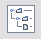

| S.No | Test | Scenario |
|---|---|---|
| 1 | Tree Demo |
Press Left/Right arrow key until the Tree icon  has focus. Press 'space' to choose. Tab until the "Tree Demo" tab has focus. Press 'space'. Press 'tab'. Press the down arrow. "Music" should have focus. Navigate up and down the tree using the up and down arrow keys. Expand and collapse folders using the right and left arrow keys. |
| Expected Result | ||
| See above test description. | ||